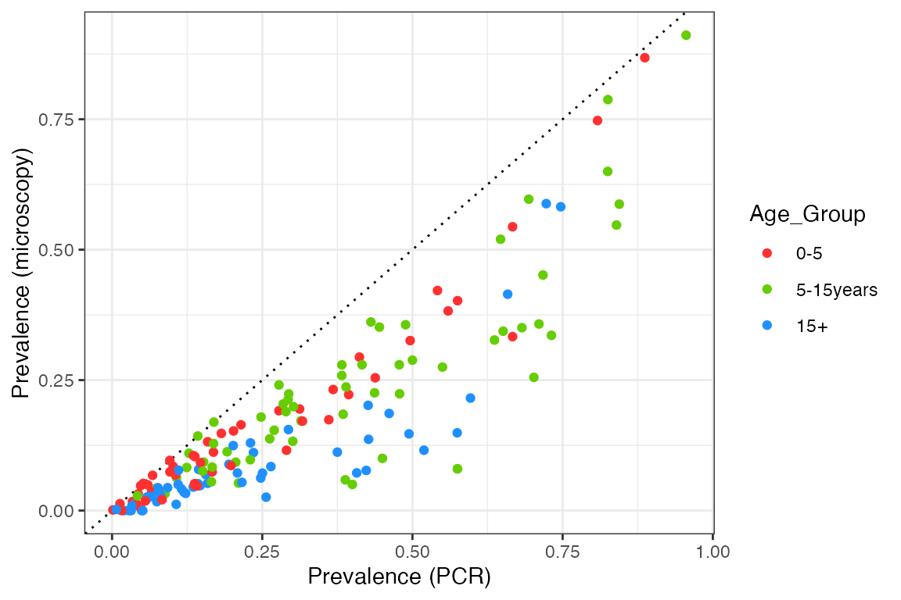

vignettes/calibration_diagnostics.Rmd
calibration_diagnostics.RmdThis report aims to:
The data used here come from a systematic review by Whittaker et al. (2021) looking into global patterns of submicroscopic P. falciparum infection - see here for further information on this dataset. Let’s start by plotting the raw data:
# plot data and model
plot1 <- PCR_micro_age_whittaker2021 %>%
ggplot() + theme_bw() +
geom_abline(aes(slope = 1, intercept = 0), linetype = "dotted") +
geom_point(aes(x = PCR_Prev, y = Micro_Prev, color = Age_Group)) +
scale_color_manual(values = simplegen_cols()) +
xlab("Prevalence (PCR)") + ylab("Prevalence (microscopy)")
plot1
We can see that prevalence by microscopy is always below the 1:1 line, in other words, microscopy is less sensitive than PCR over the entire prevalence range. The relationship also appears to have a curve, with the two measures agreeing at both very high and very low prevalence, but with microscopy being significantly below PCR prevalence at intermediate values. Nevertheless, let’s start by fitting a simple linear relationship to each age group to get a feel for the overall slope:
# fit linear model to each age group
slope_df <- mapply(function(x) {
mod <- lm(x$Micro_Prev ~ x$PCR_Prev + 0)
data.frame(Age_Group = x$Age_Group[1], slope = mod$coefficients[1])
}, split(PCR_micro_age_whittaker2021, f = PCR_micro_age_whittaker2021$Age_Group), SIMPLIFY = FALSE) %>%
bind_rows()
# add fits to plot
plot2 <- plot1 +
geom_abline(aes(slope = slope, intercept = 0, color = Age_Group),
linetype = "dashed", data = slope_df)
plot2
# print slope
slope_df## Age_Group slope
## x$PCR_Prev...1 0-5 0.7352078
## x$PCR_Prev...2 5-15years 0.6177060
## x$PCR_Prev...3 15+ 0.4601922This is not an excellent fit to the data, but it makes it clear that microscopy sensitivity decreases (relative to PCR) as we look at older age groups.
We will compare this against model output produced by taking a range of mosquito relative population densities, implying a range of EIRs. Measured values include the prevalence by both microscopy and PCR in age groups that correspond to the data (0-5 years, 5-15 years, and over 15 year olds). For each simulation, model output is run for 20 years and prevalences are taken as the average over the final 10 years.
# load precomputed model output
# code to produce this output: R_ignore/calibration/calibration_micro_PCR1.R
df_model <- readRDS("../inst/extdata/calibration_micro_PCR1.rds")
plot2 +
geom_line(aes(x = PCR, y = Micro, color = Age_Group), data = df_model)We can see that our model captures the overall pattern in the data, but it fails to capture the differences between the age groups. This implies that we need a stronger relationship between detectibility and age in our model, such that older age groups contain many sub-microscopic infections. As we only model detectibility changing as a function of exposure and not age, we need this to be an exposure-driven effect in the current setup. However, any changes also need to make sense in terms of age-incidence patterns (see here).
We also find that the model is too linear, having a slight upwards curve at very high prevalence but nothing like what we see in the data. At extremely high transmission it is likely that the vast majority of infections are asymptomatic, but based on the patterns above we would also expect them to be microscopy-positive, rather than purely sub-patent. Hence, we perhaps need to revisit the implied connection between clinical status and detectibility in our model.